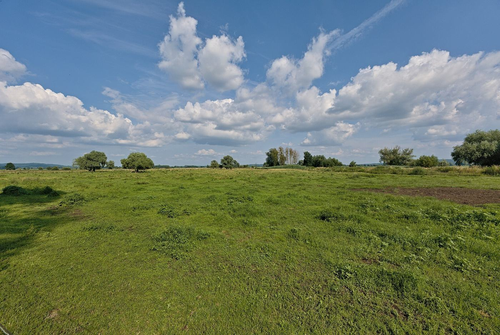

制作側の連想
ブレッドケースの部位を、配置図にしてみる
ブレッドケースの部位を図にしたもので、制作側の連想です。お店の理念・由来とは無関係で、実際のお店の設備や商品を示すものでもありません。六つの部位に番号をふり、上の図と並べています。
凡例
六つの部位
- 1天板箱のいちばん上をふさぐ平らな板。ふちが少し張り出していて、上に物を置くこともできる。
- 2通気孔本体の上のほうに横一列に並ぶ、細いすき間。箱の中の空気を少しずつ入れ替える。
- 3本体の胴四方を囲む箱の胴。中の広さと形を決める、いちばん大きな部分。
- 4前扉下の縁を軸にして手前へ倒れる、正面の扉。倒すと中のものに手が届く。
- 5つまみ扉の上の縁についた、指でつまむ小さな取っ手。ここを引いて扉を開ける。
- 6足箱の底の左右につく低い脚。底を床や台からわずかに浮かせる。
写真(イメージ)
写真(イメージ)


写真はイメージです。お店のものではありません。
ご案内
お店のこと(確認できたものだけ)
| 所在地 | 〒444-0045 愛知県岡崎市康生通東２丁目２７番地2 |
|---|---|
| 電話 | 準備中 |
| 営業時間 | 準備中 |
| 定休日 | 準備中 |
| ご予約 | 準備中 |
| 駐車場 | 準備中 |
| SNS | Instagram @ftobread |